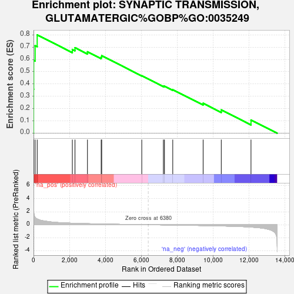
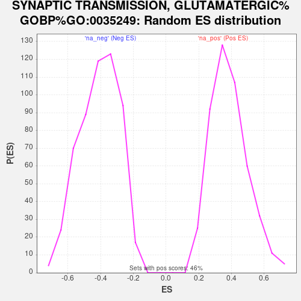

| Dataset | ControlvsDiabete |
| Phenotype | NoPhenotypeAvailable |
| Upregulated in class | na_pos |
| GeneSet | SYNAPTIC TRANSMISSION, GLUTAMATERGIC%GOBP%GO:0035249 |
| Enrichment Score (ES) | 0.7990219 |
| Normalized Enrichment Score (NES) | 2.0632994 |
| Nominal p-value | 0.0 |
| FDR q-value | 0.03875722 |
| FWER p-Value | 0.233 |

| SYMBOL | RANK IN GENE LIST | RANK METRIC SCORE | RUNNING ES | CORE ENRICHMENT | |
|---|---|---|---|---|---|
| 1 | UNC13C | 3 | 3.243 | 0.3569 | Yes |
| 2 | GRIA1 | 9 | 2.140 | 0.5921 | Yes |
| 3 | GRIN2B | 89 | 1.133 | 0.7110 | Yes |
| 4 | GRIA4 | 205 | 0.877 | 0.7990 | Yes |
| 5 | GRIK2 | 2160 | 0.238 | 0.6809 | No |
| 6 | NAPA | 2307 | 0.224 | 0.6948 | No |
| 7 | SLC17A7 | 3001 | 0.168 | 0.6620 | No |
| 8 | UNC13B | 3765 | 0.121 | 0.6190 | No |
| 9 | GRIN3A | 3794 | 0.119 | 0.6300 | No |
| 10 | NAPB | 6022 | 0.014 | 0.4671 | No |
| 11 | GRIN3B | 7225 | -0.035 | 0.3821 | No |
| 12 | SLC1A4 | 7285 | -0.037 | 0.3819 | No |
| 13 | CNIH3 | 7747 | -0.055 | 0.3538 | No |
| 14 | GRIA3 | 9436 | -0.129 | 0.2434 | No |
| 15 | GRID1 | 10445 | -0.188 | 0.1896 | No |
| 16 | GRIK1 | 12099 | -0.362 | 0.1073 | No |
